Contents
Matlab神经网络43个案例分析
清空环境变量
function chapter_FIGsh
tic;
close all;
clear;
clc;
format compact;
原始数据的提取
load chapter_sh.mat;
ts = sh_open;
time = length(ts);
figure;
plot(ts,'LineWidth',2);
title('上证指数的每日开盘数(1990.12.20-2009.08.19)','FontSize',12);
xlabel('交易日天数(1990.12.19-2009.08.19)','FontSize',12);
ylabel('开盘数','FontSize',12);
grid on;
print -dtiff -r600 original;
snapnow;
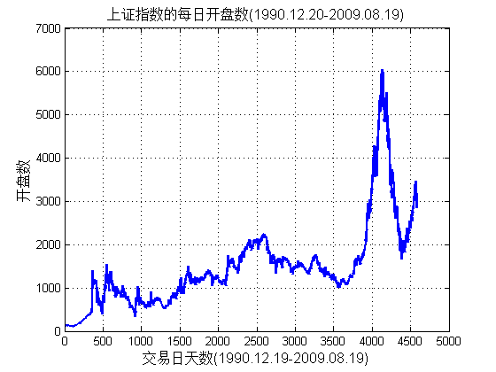
对原始数据进行模糊信息粒化
win_num = floor(time/5);
tsx = 1:win_num;
tsx = tsx';
[Low,R,Up]=FIG_D(ts','triangle',win_num);
figure;
hold on;
plot(Low,'b+');
plot(R,'r*');
plot(Up,'gx');
hold off;
legend('Low','R','Up',2);
title('模糊信息粒化可视化图','FontSize',12);
xlabel('粒化窗口数目','FontSize',12);
ylabel('粒化值','FontSize',12);
grid on;
print -dtiff -r600 FIGpic;
snapnow;
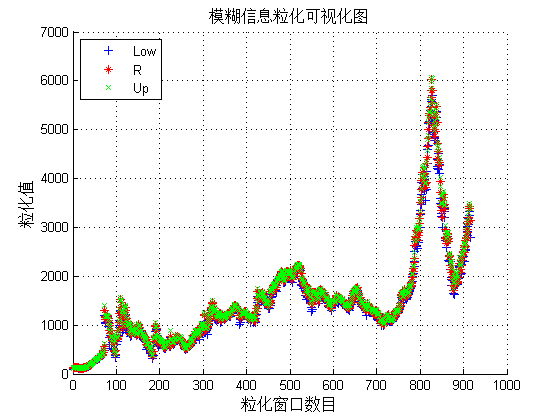
利用SVM对Low进行回归预测
[low,low_ps] = mapminmax(Low);
low_ps.ymin = 100;
low_ps.ymax = 500;
[low,low_ps] = mapminmax(Low,low_ps);
figure;
plot(low,'b+');
title('Low归一化后的图像','FontSize',12);
xlabel('粒化窗口数目','FontSize',12);
ylabel('归一化后的粒化值','FontSize',12);
grid on;
print -dtiff -r600 lowscale;
low = low';
snapnow;
[bestmse,bestc,bestg] = SVMcgForRegress(low,tsx,-10,10,-10,10,3,1,1,0.1,1);
disp('打印粗略选择结果');
str = sprintf( 'SVM parameters for Low:Best Cross Validation MSE = %g Best c = %g Best g = %g',bestmse,bestc,bestg);
disp(str);
[bestmse,bestc,bestg] = SVMcgForRegress(low,tsx,-4,8,-10,10,3,0.5,0.5,0.05,1);
disp('打印精细选择结果');
str = sprintf( 'SVM parameters for Low:Best Cross Validation MSE = %g Best c = %g Best g = %g',bestmse,bestc,bestg);
disp(str);
cmd = ['-c ', num2str(bestc), ' -g ', num2str(bestg) , ' -s 3 -p 0.1'];
low_model = svmtrain(low, tsx, cmd);
[low_predict,low_mse] = svmpredict(low,tsx,low_model);
low_predict = mapminmax('reverse',low_predict,low_ps);
predict_low = svmpredict(1,win_num+1,low_model);
predict_low = mapminmax('reverse',predict_low,low_ps);
predict_low
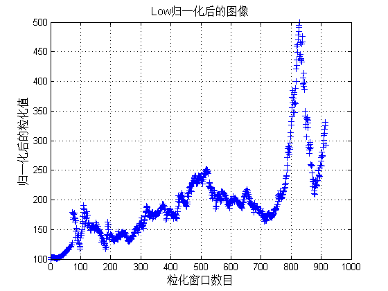
打印粗略选择结果
SVM parameters for Low:Best Cross Validation MSE = 35.0883 Best c = 256 Best g = 0.03125
打印精细选择结果
SVM parameters for Low:Best Cross Validation MSE = 35.0178 Best c = 256 Best g = 0.0220971
Mean squared error = 22.0053 (regression)
Squared correlation coefficient = 0.995366 (regression)
Mean squared error = 85135.8 (regression)
Squared correlation coefficient = -1.#IND (regression)
predict_low =
2.7968e+03
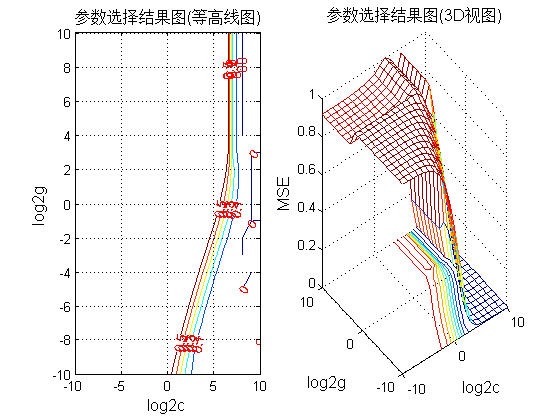 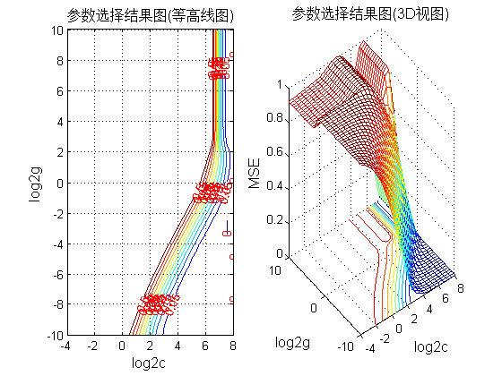
对于Low的回归预测结果分析
figure;
hold on;
plot(Low,'b+');
plot(low_predict,'r*');
legend('original low','predict low',2);
title('original vs predict','FontSize',12);
xlabel('粒化窗口数目','FontSize',12);
ylabel('粒化值','FontSize',12);
grid on;
print -dtiff -r600 lowresult;
figure;
error = low_predict - Low';
plot(error,'ro');
title('误差(predicted data-original data)','FontSize',12);
xlabel('粒化窗口数目','FontSize',12);
ylabel('误差量','FontSize',12);
grid on;
print -dtiff -r600 lowresulterror;
snapnow;
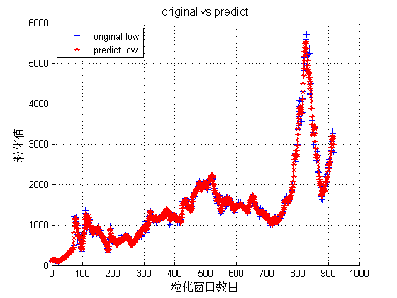 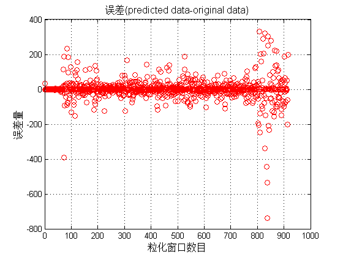
利用SVM对R进行回归预测
[r,r_ps] = mapminmax(R);
r_ps.ymin = 100;
r_ps.ymax = 500;
[r,r_ps] = mapminmax(R,r_ps);
figure;
plot(r,'r*');
title('r归一化后的图像','FontSize',12);
grid on;
r = r';
snapnow;
[bestmse,bestc,bestg] = SVMcgForRegress(r,tsx,-10,10,-10,10,3,1,1,0.1);
disp('打印粗略选择结果');
str = sprintf( 'SVM parameters for R:Best Cross Validation MSE = %g Best c = %g Best g = %g',bestmse,bestc,bestg);
disp(str);
[bestmse,bestc,bestg] = SVMcgForRegress(r,tsx,-4,8,-10,10,3,0.5,0.5,0.05);
disp('打印精细选择结果');
str = sprintf( 'SVM parameters for R:Best Cross Validation MSE = %g Best c = %g Best g = %g',bestmse,bestc,bestg);
disp(str);
cmd = ['-c ', num2str(bestc), ' -g ', num2str(bestg) , ' -s 3 -p 0.1'];
r_model = svmtrain(r, tsx, cmd);
[r_predict,r_mse] = svmpredict(r,tsx,low_model);
r_predict = mapminmax('reverse',r_predict,r_ps);
predict_r = svmpredict(1,win_num+1,r_model);
predict_r = mapminmax('reverse',predict_r,r_ps);
predict_r
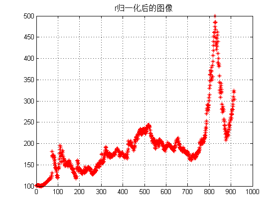
打印粗略选择结果
SVM parameters for R:Best Cross Validation MSE = 22.7821 Best c = 256 Best g = 0.03125
打印精细选择结果
SVM parameters for R:Best Cross Validation MSE = 22.7821 Best c = 256 Best g = 0.03125
Mean squared error = 26.2002 (regression)
Squared correlation coefficient = 0.995899 (regression)
Mean squared error = 84653.5 (regression)
Squared correlation coefficient = -1.#IND (regression)
predict_r =
2.9500e+03
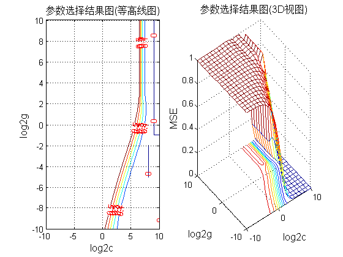 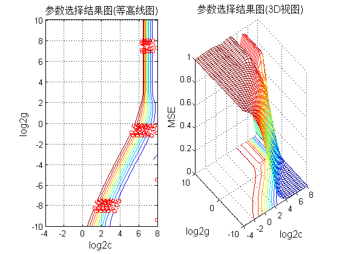
对于R的回归预测结果分析
figure;
hold on;
plot(R,'b+');
plot(r_predict,'r*');
legend('original r','predict r',2);
title('original vs predict','FontSize',12);
grid on;
figure;
error = r_predict - R';
plot(error,'ro');
title('误差(predicted data-original data)','FontSize',12);
grid on;
snapnow;
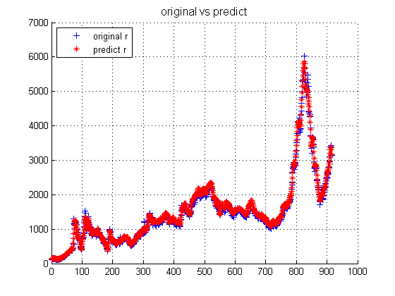 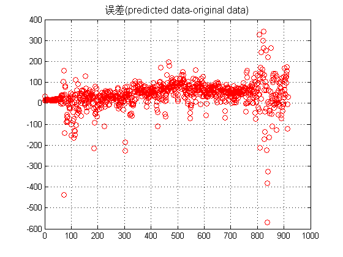
利用SVM对Up进行回归预测
[up,up_ps] = mapminmax(Up);
up_ps.ymin = 100;
up_ps.ymax = 500;
[up,up_ps] = mapminmax(Up,up_ps);
figure;
plot(up,'gx');
title('Up归一化后的图像','FontSize',12);
grid on;
up = up';
snapnow;
[bestmse,bestc,bestg] = SVMcgForRegress(up,tsx,-10,10,-10,10,3,1,1,0.5);
disp('打印粗略选择结果');
str = sprintf( 'SVM parameters for Up:Best Cross Validation MSE = %g Best c = %g Best g = %g',bestmse,bestc,bestg);
disp(str);
[bestmse,bestc,bestg] = SVMcgForRegress(up,tsx,-4,8,-10,10,3,0.5,0.5,0.2);
disp('打印精细选择结果');
str = sprintf( 'SVM parameters for Up:Best Cross Validation MSE = %g Best c = %g Best g = %g',bestmse,bestc,bestg);
disp(str);
cmd = ['-c ', num2str(bestc), ' -g ', num2str(bestg) , ' -s 3 -p 0.1'];
up_model = svmtrain(up, tsx, cmd);
[up_predict,up_mse] = svmpredict(up,tsx,up_model);
up_predict = mapminmax('reverse',up_predict,up_ps);
predict_up = svmpredict(1,win_num+1,up_model);
predict_up = mapminmax('reverse',predict_up,up_ps);
predict_up
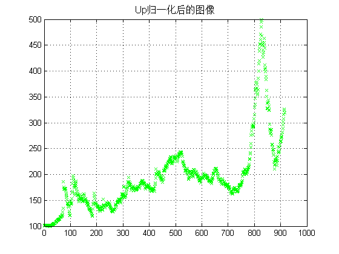
打印粗略选择结果
SVM parameters for Up:Best Cross Validation MSE = 23.8759 Best c = 512 Best g = 0.0625
打印精细选择结果
SVM parameters for Up:Best Cross Validation MSE = 23.8957 Best c = 256 Best g = 0.0220971
Mean squared error = 11.1079 (regression)
Squared correlation coefficient = 0.997625 (regression)
Mean squared error = 96798.9 (regression)
Squared correlation coefficient = -1.#IND (regression)
predict_up =
3.2673e+03
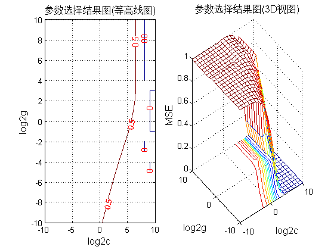 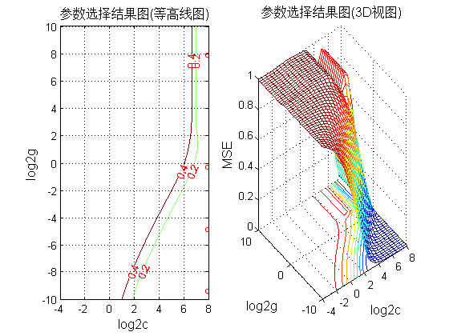
对于Up的回归预测结果分析
figure;
hold on;
plot(Up,'b+');
plot(up_predict,'r*');
legend('original up','predict up',2);
title('original vs predict','FontSize',12);
grid on;
figure;
error = up_predict - Up';
plot(error,'ro');
title('误差(predicted data-original data)','FontSize',12);
grid on;
toc;
snapnow;
Elapsed time is 1171.865134 seconds.
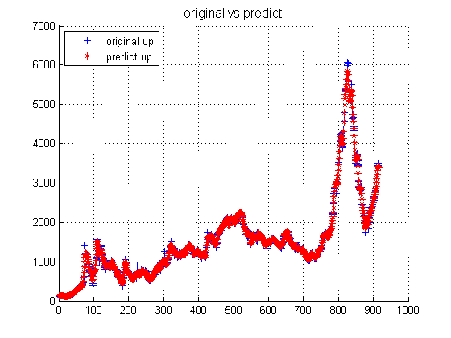 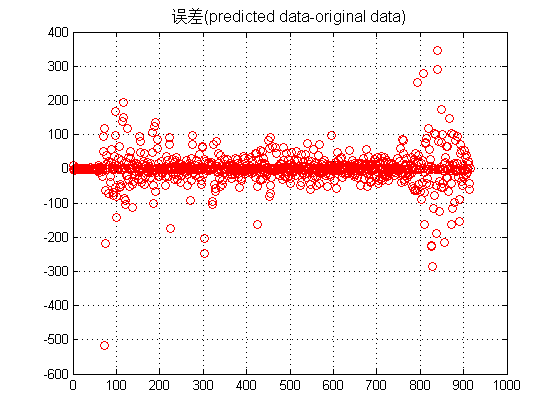
子函数 SVMcgForRegress.m
function [mse,bestc,bestg] = SVMcgForRegress(train_label,train,cmin,cmax,gmin,gmax,v,cstep,gstep,msestep,flag)
if nargin < 11
flag = 0;
end
if nargin < 10
msestep = 0.1;
end
if nargin < 7
msestep = 0.1;
v = 3;
cstep = 1;
gstep = 1;
end
if nargin < 6
msestep = 0.1;
v = 3;
cstep = 1;
gstep = 1;
gmax = 5;
end
if nargin < 5
msestep = 0.1;
v = 3;
cstep = 1;
gstep = 1;
gmax = 5;
gmin = -5;
end
if nargin < 4
msestep = 0.1;
v = 3;
cstep = 1;
gstep = 1;
gmax = 5;
gmin = -5;
cmax = 5;
end
if nargin < 3
msestep = 0.1;
v = 3;
cstep = 1;
gstep = 1;
gmax = 5;
gmin = -5;
cmax = 5;
cmin = -5;
end
[X,Y] = meshgrid(cmin:cstep:cmax,gmin:gstep:gmax);
[m,n] = size(X);
cg = zeros(m,n);
bestc = 0;
bestg = 0;
mse = 10^10;
basenum = 2;
for i = 1:m
for j = 1:n
cmd = ['-v ',num2str(v),' -c ',num2str( basenum^X(i,j) ),' -g ',num2str( basenum^Y(i,j) ),' -s 3'];
cg(i,j) = svmtrain(train_label, train, cmd);
if cg(i,j) < mse
mse = cg(i,j);
bestc = basenum^X(i,j);
bestg = basenum^Y(i,j);
end
if ( cg(i,j) == mse && bestc > basenum^X(i,j) )
mse = cg(i,j);
bestc = basenum^X(i,j);
bestg = basenum^Y(i,j);
end
end
end
[cg,ps] = mapminmax(cg,0,1);
figure;
subplot(1,2,1);
[C,h] = contour(X,Y,cg,0:msestep:0.5);
clabel(C,h,'FontSize',10,'Color','r');
xlabel('log2c','FontSize',12);
ylabel('log2g','FontSize',12);
title('参数选择结果图(等高线图)','FontSize',12);
grid on;
subplot(1,2,2);
meshc(X,Y,cg);
axis([cmin,cmax,gmin,gmax,0,1]);
xlabel('log2c','FontSize',12);
ylabel('log2g','FontSize',12);
zlabel('MSE','FontSize',12);
title('参数选择结果图(3D视图)','FontSize',12);
filename = ['c',num2str(bestc),'g',num2str(bestg),num2str(msestep),'.tif'];
if flag == 1;
print('-dtiff','-r600',filename);
end